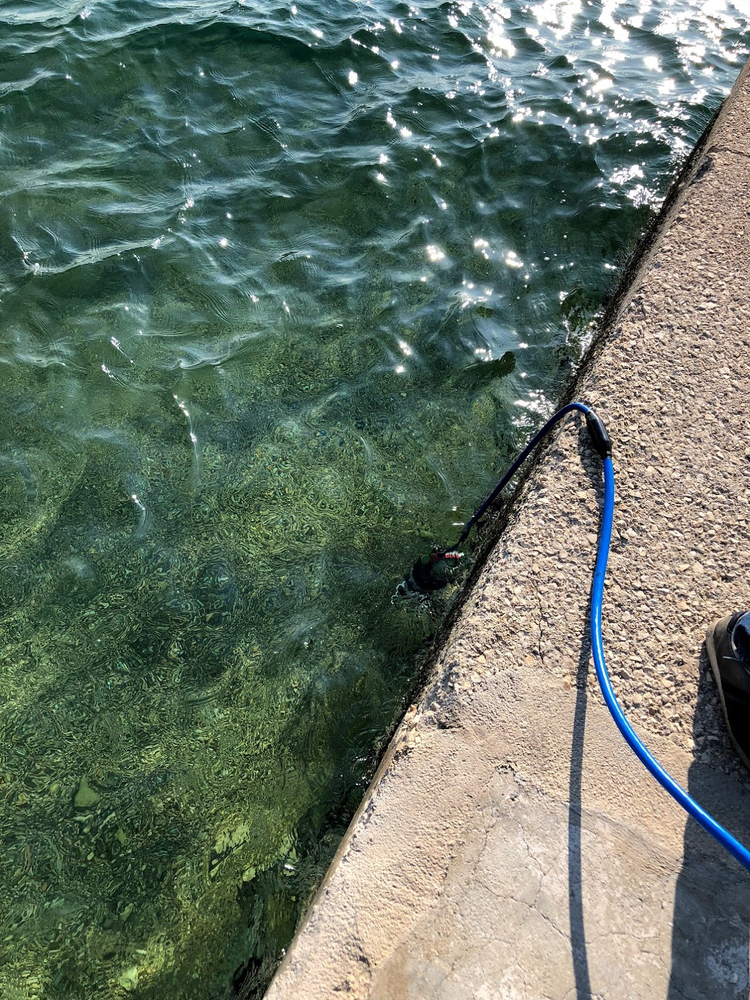

Underwater Networks
Chinmay Pendharkar @ Oceans Summer School, 2024
Who are you?
- Chinmay
- Singapore 🇸🇬
- Audio/Acoustics + Software
- CTO @ Subnero
Subnero
- Singapore 🇸🇬
- Underwater Wireless
- Acoustic Smart Modems
- UnetStack
- Booth A07 @ Oceans
🙋
Oceans
- Vast : 70% of Earth's surface ğŸŒ
- Deep : 11km deep 🌊
- Dark : 1000x less light than surface 🌑
We need technology to explore and understand the oceans
Technology..
Robots 🤖
Sensors 🌡️
Terrestrial comms..
.. is kinda "solved"Starlink 🛰️
Official SpaceX PhotosBut underwater comms is still a significant challenge!
Why?
RF
Zahedi, Yasser & Ghafghazi, Hamidreza & Syed Ariffin, Sharifah Hafizah & Kassim, Norazan. (2011). Feasibility of Electromagnetic Communication in Underwater Wireless Sensor Networks. 614-623. 10.1007/978-3-642-25462-8_55.
Optical Comms?
Optical Comms
- High datarate + Short distance
- Data mueling 🫏
- Docking ⚓️
- Hybrid communications 📡
Acoustic Comms
- Limited bandwidth
- Range vs datarate 📉
- Noisy environment 🚢
Acoustic Comms challenges
Noisy ports
Acoustic Comms challenges
Noisy oceans!
http://wildsingapore.com/Acoustic Comms challenges
Noisy oceans!
But comms alone is not enough...
We need networksğŸŒ
UnetStack
A collection of software technologies to extend communication networks underwater
- Networking Stack
- Simulator
- Helper Libraries (Gateways), APIs
History
- Developed in ~2009
- Developed by Acoustics Research Lab @ National University of Singapore (NUS)
- Comms for their research AUV (Starfish)
- Co-maintained by Subnero
Design Goals
- Bandwidth Efficiency
- In-field reconfigurability
- Ease of deployment
- Simulation
Design : Bandwidth Efficiency
- Agents/Services instead of Layers
- Customised Physical Layer Implementation (FHBFSK / OFDM)
- Forward Error Correction (FEC)
- Compression + Efficient Encoding (Erasure Correction)
- Priorities + TTLs
Design : In-field reconfigurability
- Software Defined Modem
- Agent-based architecture
- Builtin scripting support (Groovy)
- CONTROL vs DATA communication channels
- Link Tuning (FEC, Modulation, Power, ...)
- Routing (Static, Dynamic, ...)
Design : Ease of Deployment

- Support for non-acoustic Links (RF, Optical, ...)
- Multiple Network Topologies (Star, Mesh, ...)
- Same code for development and deployment (Java)
- Helper Libraries (Gateways) for interfacing with other languages (Python, JavaScript, C, Julia, ...)
Design : Simulation
- High Fidelity Network Simulation
- Realistic Channel Models
- Basic motion simulation
- Acoustic Propagation Simulation
- Hardware in the loop simulation (new!)
Nerdy Details 🤓
UnetStack
- OSS distributed computing framework fjåge
- Agents => unit of computation (threads/nodes)
- Message passing => communication between Agents
- JSON/TCP as the transport protocol on the wire
UnetStack - Languages
- Java
- Groovy
- Julia
- Python/C/Javascript (Gateways)